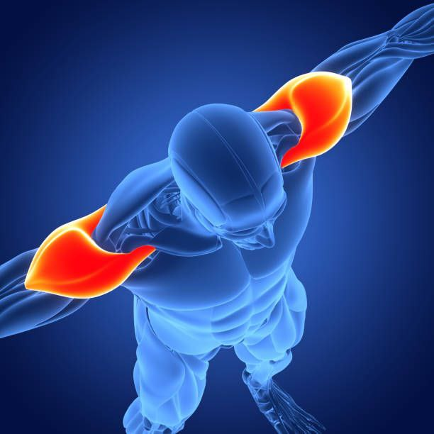

آشنایی با عضلات مختلف بدن
عضله دوسر بازویی (Biceps):
در جلوی بازو قرار دارد و برای خم کردن دست استفاده میشود. این عضله با تمریناتی مثل جلوبازو با دمبل یا هالتر تقویت میشود. معمولاً همراه با عضله پشت بازو تمرین داده میشود تا بازوها متعادل رشد کنند.

عضله سهسر بازویی (Triceps):
در پشت بازو قرار دارد و وظیفهاش صاف کردن دست است. حرکات پشت بازو طناب و دیپ برای تقویت آن مفیدند. بهتر است همراه با بایسپس تمرین داده شود.

عضله سرشانه (Deltoid):
از سه بخش جلو، میانه و پشت تشکیل شده است. این عضله به بدن فرم زیبایی میدهد. تمرینات پرس سرشانه و نشر جانب باعث تقویت آن میشوند.
عضلات سینه (Chest):
عضلات جلوی بدن هستند و با تمرینات پرس سینه و فلای رشد میکنند. این عضلات معمولاً همراه با بازو یا سرشانه تمرین داده میشوند.

عضلات پشت (Back):
شامل چند عضله بزرگ مثل لاتیسیموس و ترپس است. این عضلات در حرکات کششی و تعادل بدن نقش دارند. تمریناتی مثل بارفیکس، ددلیفت و قایقی باعث رشد آنها میشود.

عضلات شکم (Abdominals):
این عضلات باعث پایداری بدن و فرم مناسب میشوند. برای تقویت آنها تمرینات پلانک و دراز و نشست مؤثر است. رژیم غذایی سالم برای دیدن عضلات شکم ضروری است.
عضله چهارسر ران (Quadriceps):
در جلوی پا قرار دارد و برای صاف کردن زانو به کار میرود. تمریناتی مثل اسکوات و پرس پا برای تقویت آن مفید هستند.

عضله همسترینگ (Hamstrings):
در پشت پا قرار دارد و باعث خم شدن زانو میشود. تمریناتی مثل ددلیفت رومانیایی و پشت پا دستگاه آن را قوی میکند.

عضله سرینی (Gluteus Maximus):
این عضله در ناحیه باسن قرار دارد و برای تعادل و قدرت پایینتنه بسیار مهم است. تمرینات اسکوات و Hip Thrust بهترین گزینهها هستند.

عضلات ساق پا (Calves):
در پایین پا قرار دارند و باعث بالا بردن پاشنه و حفظ تعادل میشوند. برای رشد آنها باید تکرار بالا با وزنه متوسط انجام داد.
برنامه ترکیب عضلات در تمرینات بدنسازی
برای رشد متناسب بدن، مربیان معمولاً عضلات را بهصورت ترکیبی تمرین میدهند:
🗓 شنبه: سینه و بازو
🗓 یکشنبه: پا و شکم
🗓 دوشنبه: پشت و پشت بازو
🗓 سهشنبه: سرشانه و ساعد
🗓 چهارشنبه: تمرین هوازی یا استراحت
این تقسیمبندی کمک میکند تا همه عضلات فرصت رشد و ریکاوری داشته باشند.
تفاوت حجم گرفتن و قویتر شدن عضله
حجم گرفتن یعنی عضله بزرگتر شود؛ برای این هدف باید با وزنههای متوسط و تکرار ۸ تا ۱۲ تمرین کرد. اما قویتر شدن به معنای افزایش قدرت است، نه الزاماً اندازه. برای قدرت باید با وزنه سنگین و تکرار پایین تمرین کرد. تغذیه، خواب و استراحت کافی در هر دو حالت ضروری است.